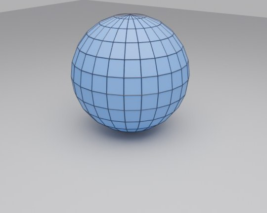
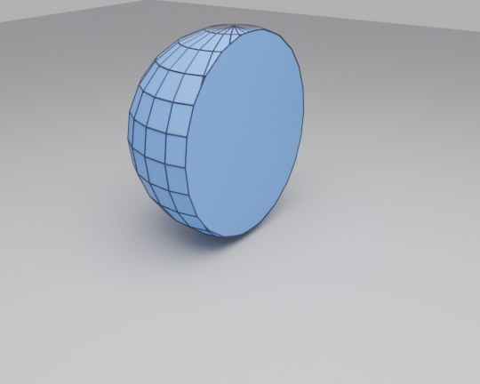

Bonus lesson
Bisect
Bisect is a quick way to cut a mesh in two along a plane you choose. It works in Edit Mode. Find it under Mesh › Bisect, or in the toolbar as Knife › Bisect. The manual lists no shortcut key for it.


How to use it
With the tool active, hold the left mouse button and drag to draw the cut line. Once the cut is done, the Adjust Last Operation panel gives you a few options.
The options
- Plane Point and Plane Normal: you can type exact values to place the plane.
- Fill: the cut can fill in the hole it makes. Materials, UV maps and color attributes come from the surrounding geometry.
- Clear Inner and Clear Outer: remove the geometry on one side of the cut.
- Axis Threshold: cut along the straight plane, or along the existing geometry that is closer to the plane than this distance.
While you draw the line
- Spacebar moves the line.
- Ctrl snaps the rotation of the line to 15 degree steps.
- F flips which side counts as inner and which as outer. It helps when you use Clear Inner, Clear Outer or Fill.
Read the manual page on Bisect.
Try it
This exercise is our own suggestion and has not been run step by step in the GUI. Add a UV Sphere, enter Edit Mode and select everything. Choose the Bisect tool and drag a line across the sphere. Then open the Adjust Last Operation panel and try Fill and Clear Outer. Press F while drawing to flip the sides. Use Ctrl+Z to undo.